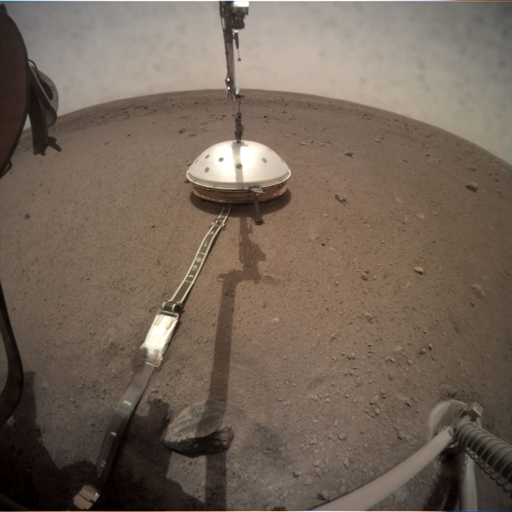
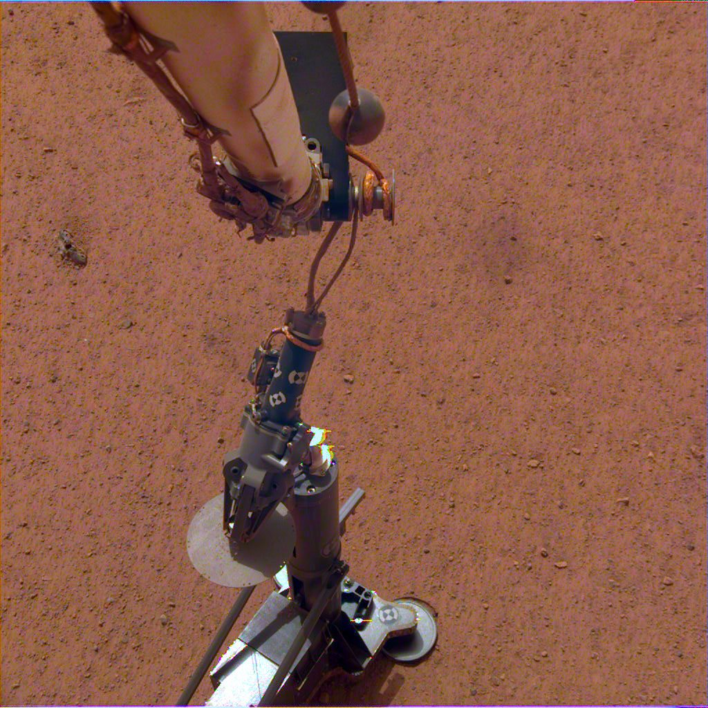
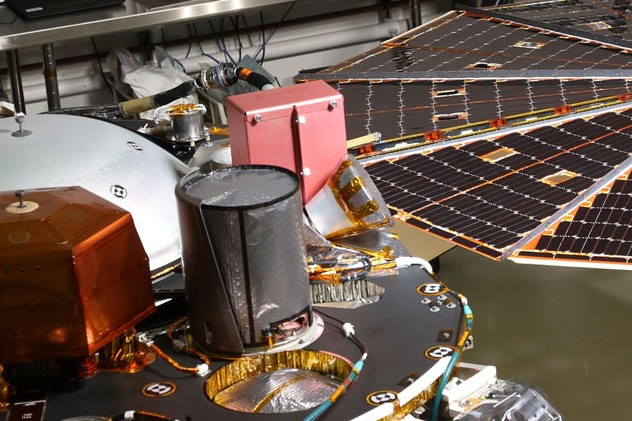

InSight : Interior Exploration using Seismic Investigations, Geodesy and Heat Transport
Adrien RICHARD
Bachelor 2 EPSI Grenoble
09 Aout 2019
Sommaire
Mars
Historique des missions marsiennes
Insight
- Les instruments et leurs fonctions
- Déroulement de la mission
Ce que cela va nous apporter

- Voyage : environ 220 ~ 230 jours
- Vitesse de la lumière : 8~9 minutes
- Taille : 50% du diamètre de la Terre
Nasa et Mars
Mariner
1964, sonde spacialeViking
1975, sonde marsiennePathfinder
1996, robotPeonix
2003, sonde marsienneOpportinity
2003, robotCuriosity
2011, robotInSight
Exploration interne par les sondages sismiques, la géodésie et les flux thermiqueAtterissage le 26 November 2018 à 19:52:59 UTC
130 Sols
Instruments
SEIS

- Seismometre
- Donne des indications sur l'interieur de la planete
- Extrêmement sensible
HP3

- Mesure les changements de temperature interne à Mars
- Premier instrument à creuser aussi profond (5 mètres)
- Actuellement en pause*
RISE

- Mesure les vibrations des pôles grâce à l'attraction du soleil
- Donne des indications sur le centre de Mars
| Instrument | Puissance | Données |
|---|---|---|
| SEIS | 8,5W | 38 megabits / jours |
| HP3 | 2W (creuse) | 350 megabits / mission |
| RISE | 78W (2h par jour) | N/C |

Pourquoi ?
- Formation des planetes
- Impactes des metéorites
- Mesures tectonique
- Vie actuelle ? Vie Future ?
Prêt à tout plaquer pour habiter sur Mars ?
Sources Images
- https://mars.nasa.gov/
- https://nasa.gov/
- https://jpl.nasa.gov/